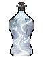
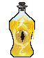
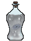
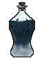
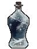
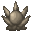
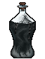
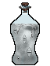
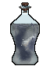

Путь «Зритель»
От слабой к сильной: Seq 9 «Зритель» → Seq 1 «Автор». Сменить путь можно на «Солнце» или «Тиран» — с Seq 5 и сильнее, зельем на ступень выше (как).
| Seq | Последовательность | Ступень сервера |
|---|---|---|
| 9 | Зритель | II |
| 8 | Телепат | III |
| 7 | Психиатр | IV |
| 6 | Гипнотизёр | V |
| 5 | Сновидец | VI |
| 4 | Манипулятор | VII |
| 3 | Ткач Снов | VIII |
| 2 | Проницатель | — |
| 1 | Автор | — |
У каждой последовательности: зелье и его ингредиенты (главный — первым), способности, которые она открывает, и отыгрыш — действия, которые переваривают зелье. Ингредиенты указаны с двумя самыми доступными источниками; все — по ссылке. Ингредиенты Seq 9–6 этого пути бывают и в товарах у жителя Торговец Потусторонних — у каждого по 2 случайных предложения на уровень (цены).
Seq 9 · Зритель
Зелье  Зритель Зелье, формула
Зритель Зелье, формула  Зритель Рецепт зелья (Последовательность 9). Эта Seq нужна для ступени II.
Зритель Рецепт зелья (Последовательность 9). Эта Seq нужна для ступени II.
Ингредиенты
 Глаз зрелой рыбы Манхал — существо мода: Мурлок (водится: океаны) — 26 % за убийство. Все источники (2)
Глаз зрелой рыбы Манхал — существо мода: Мурлок (водится: океаны) — 26 % за убийство. Все источники (2) Очищенная вода — крафт: печь; сундук: Постройки Мира духов — 39 %. Все источники (3)
Очищенная вода — крафт: печь; сундук: Постройки Мира духов — 39 %. Все источники (3) Эссенция безвременника — добыча: Хранитель — 100 % за убийство; сундук: Древний город — 25 %. Все источники (3)
Эссенция безвременника — добыча: Хранитель — 100 % за убийство; сундук: Древний город — 25 %. Все источники (3) Бутылочка — обычный предмет
Бутылочка — обычный предмет- Розовые лепестки — обычный предмет
Способности
- Медитация — Медитировать, восполняя духовность
- Наблюдение — Наблюдать разумы и мысли окружающих
- Физическое усиление (пассивная)
Отыгрыш — переваривание за действие и перерыв между засчитанными:
- Посмотреть в подзорную трубу — 0,95 %, раз в 8 с
- Использовать кафедру — 1,4 %, раз в 20 с
- Использовать картографический стол — 0,47 %, раз в 10 с
- Стоять на большой высоте — 0,28 %, раз в 20 с
- Сохранять полное здоровье — 0,095 %, раз в 30 с
- Прочитать подписанную книгу — 0,57 %, раз в 20 с
Seq 8 · Телепат
Зелье  Телепат Рецепт зелья (Последовательность 8). Эта Seq нужна для ступени III.
Телепат Рецепт зелья (Последовательность 8). Эта Seq нужна для ступени III.
Ингредиенты
 Гипофиз радужной саламандры — добыча: Аксолотль — 15 % за убийство игроком; существо мода: Каменный голем (водится: весь верхний мир) — 11 % за убийство. Все источники (3)
Гипофиз радужной саламандры — добыча: Аксолотль — 15 % за убийство игроком; существо мода: Каменный голем (водится: весь верхний мир) — 11 % за убийство. Все источники (3) Каштановая спора — блок: Коричневый гриб, Блок коричневого гриба — 10 % за блок; сундук: Постройки Мира духов — 24 %. Все источники (3)
Каштановая спора — блок: Коричневый гриб, Блок коричневого гриба — 10 % за блок; сундук: Постройки Мира духов — 24 %. Все источники (3) Белоснежные эльфийские цветы — блок: Ландыш (ножницами) — 25 % за блок; существо мода: Синий чародей (водится: Мир духов; приходит и Ночью Мира духов) — 18 % за убийство. Все источники (3)
Белоснежные эльфийские цветы — блок: Ландыш (ножницами) — 25 % за блок; существо мода: Синий чародей (водится: Мир духов; приходит и Ночью Мира духов) — 18 % за убийство. Все источники (3) Осколок аметиста — обычный предмет
Осколок аметиста — обычный предмет- Бутылочка — обычный предмет
Способности
- Телепатия — Читать мысли окружающих
Отыгрыш — переваривание за действие и перерыв между засчитанными:
- Использовать кафедру — 0,84 %, раз в 15 с
- Использовать стол зачаровывания — 0,84 %, раз в 10 с
- Создать карту — 0,42 %, раз в 15 с
- Поговорить с жителем — 0,5 %, раз в 10 с
- Приручить животное — 0,42 %, раз в 15 с
Seq 7 · Психиатр
Зелье  Психиатр Рецепт зелья (Последовательность 7). Эта Seq нужна для ступени IV.
Психиатр Рецепт зелья (Последовательность 7). Эта Seq нужна для ступени IV.
Ингредиенты
 Плод Древа старейшин — сундук: Лесной особняк — 20 %; существо мода: Синий чародей (водится: Мир духов; приходит и Ночью Мира духов) — 15 % за убийство. Все источники (3)
Плод Древа старейшин — сундук: Лесной особняк — 20 %; существо мода: Синий чародей (водится: Мир духов; приходит и Ночью Мира духов) — 15 % за убийство. Все источники (3) Кровь Зеркального дракона — пустая бутылка: Светящийся спрут — 40 % за попытку, бутылка остывает 5 с; существо мода: Демон знания (водится: Мир духов, океаны; приходит и Ночью Мира духов) — 19 % за убийство. Все источники (3)
Кровь Зеркального дракона — пустая бутылка: Светящийся спрут — 40 % за попытку, бутылка остывает 5 с; существо мода: Демон знания (водится: Мир духов, океаны; приходит и Ночью Мира духов) — 19 % за убийство. Все источники (3) Лепестки эльфийского цветка — блок: Цветок хоруса — 20 % за блок. Все источники (2)
Лепестки эльфийского цветка — блок: Цветок хоруса — 20 % за блок. Все источники (2) Маринованный паучий глаз — обычный предмет
Маринованный паучий глаз — обычный предмет Бумага — обычный предмет
Бумага — обычный предмет
Способности
- Психологическая установка — Примените крадучись для подробного описания
- Безумие — Ввергнуть разум врагов в смятение
- Трепет — Трепет
- Успокоение — Успокоить кого-то, не давая ему потерять контроль
Отыгрыш — переваривание за действие и перерыв между засчитанными:
- Покормить животное — 0,74 %, раз в 10 с
- Поторговать с жителем — 1,1 %, раз в 20 с
- Размножить животных — 0,37 %, раз в 15 с
- Выпить зелье исцеления — 0,44 %, раз в 10 с
- Поговорить с жителем — 0,44 %, раз в 10 с
- Прочитать подписанную книгу — 0,37 %, раз в 20 с
Seq 6 · Гипнотизёр
Зелье  Гипнотизёр Рецепт зелья (Последовательность 6). Эта Seq нужна для ступени V.
Гипнотизёр Рецепт зелья (Последовательность 6). Эта Seq нужна для ступени V.
Ингредиенты
 Плод иллюзорного звенящего древа — археология: Тёплые океанские руины — подозрительный песок — 15 %; существо мода: Синий чародей (водится: Мир духов; приходит и Ночью Мира духов) — 11 % за убийство. Все источники (3)
Плод иллюзорного звенящего древа — археология: Тёплые океанские руины — подозрительный песок — 15 %; существо мода: Синий чародей (водится: Мир духов; приходит и Ночью Мира духов) — 11 % за убийство. Все источники (3)- Кровь Зеркального дракона — пустая бутылка: Светящийся спрут — 40 % за попытку, бутылка остывает 5 с; существо мода: Демон знания (водится: Мир духов, океаны; приходит и Ночью Мира духов) — 19 % за убийство. Все источники (3)
- Каштановая спора — блок: Коричневый гриб, Блок коричневого гриба — 10 % за блок; сундук: Постройки Мира духов — 24 %. Все источники (3)
 Часы — обычный предмет
Часы — обычный предмет Стеклянная панель — обычный предмет
Стеклянная панель — обычный предмет
Способности
- Психологическая невидимость — Стать невидимым для чужого разума
- Боевой гипноз — Ненадолго заставить врагов совершать странные действия
- Драконья чешуя — Покрыть кожу защитной драконьей чешуёй
Отыгрыш — переваривание за действие и перерыв между засчитанными:
- Приручить животное — 0,63 %, раз в 15 с
- Использовать бирку — 0,32 %, раз в 10 с
- Применить «Боевой гипноз» — 1,3 %, раз в 20 с
- Использовать поводок — 0,38 %, раз в 10 с
- Использовать нотный блок — 0,32 %, раз в 8 с
- Поторговать с жителем — 0,38 %, раз в 15 с
Seq 5 · Сновидец
Зелье  Сновидец Рецепт зелья (Последовательность 5). Эта Seq нужна для ступени VI.
Сновидец Рецепт зелья (Последовательность 5). Эта Seq нужна для ступени VI.
Ингредиенты
 Сердце ловца снов — крафт: верстак; существо мода: Демон знания (водится: Мир духов, океаны; приходит и Ночью Мира духов) — 5,6 % за убийство.
Сердце ловца снов — крафт: верстак; существо мода: Демон знания (водится: Мир духов, океаны; приходит и Ночью Мира духов) — 5,6 % за убийство. Кристалл иллюзий разума — крафт: верстак; сундук: Постройки Мира духов — 9,5 %. Все источники (3)
Кристалл иллюзий разума — крафт: верстак; сундук: Постройки Мира духов — 9,5 %. Все источники (3) Кровь Дракона разума (взрослого) — пустая бутылка: Нюхач (взрослое) — 30 % за попытку, бутылка остывает 30 с; существо мода: Демон знания (водится: Мир духов, океаны; приходит и Ночью Мира духов) — 9,3 % за убийство.
Кровь Дракона разума (взрослого) — пустая бутылка: Нюхач (взрослое) — 30 % за попытку, бутылка остывает 30 с; существо мода: Демон знания (водится: Мир духов, океаны; приходит и Ночью Мира духов) — 9,3 % за убийство. Мембрана фантома — обычный предмет
Мембрана фантома — обычный предмет Мак — обычный предмет
Мак — обычный предмет
Способности
- Духовное зрение
- Наведение сна — Погрузить врагов в сон
- Странствие по снам
- Кошмар — Наслать на врагов кошмарный сон, нанося урон
Отыгрыш — переваривание за действие и перерыв между засчитанными:
- Посмотреть в подзорную трубу — 0,53 %, раз в 8 с
- Убить исподтишка — 0,26 %, раз в 5 с
- Убить моба, не нацеленного на вас — 0,26 %, раз в 5 с
- Съесть подозрительное рагу — 0,32 %, раз в 10 с
- Стоять в полной темноте — 0,16 %, раз в 20 с
Seq 4 · Манипулятор
Зелье  Манипулятор Рецепт зелья (Последовательность 4). Эта Seq нужна для ступени VII.
Манипулятор Рецепт зелья (Последовательность 4). Эта Seq нужна для ступени VII.
Ингредиенты

Манипулятор Характеристика Потустороннего (Последовательность 4) — характеристика Потустороннего- Кровь Дракона разума (взрослого) — пустая бутылка: Нюхач (взрослое) — 30 % за попытку, бутылка остывает 30 с; существо мода: Демон знания (водится: Мир духов, океаны; приходит и Ночью Мира духов) — 9,3 % за убийство.
- Золотой лист Древа-наставника — блок: Листья цветущей азалии — 1 % за блок.
- Осколок аметиста — обычный предмет
 Книга и перо — обычный предмет
Книга и перо — обычный предмет
Способности
- Гадание
- Мифическая форма
- Виртуальная личность — Создать виртуальную личность — щит и меч разума
- Манипуляция — Управлять движениями цели
- Ментальная чума
Отыгрыш — переваривание за действие и перерыв между засчитанными:
- Убить исподтишка — 0,42 %, раз в 2 с
- Использовать поводок — 0,21 %, раз в 10 с
- Убить моба, не нацеленного на вас — 0,25 %, раз в 5 с
- Поговорить с жителем — 0,25 %, раз в 10 с
Seq 3 · Ткач Снов
Зелье  Ткач Снов Рецепт зелья (Последовательность 3). Эта Seq нужна для ступени VIII.
Ткач Снов Рецепт зелья (Последовательность 3). Эта Seq нужна для ступени VIII.
Ингредиенты
 Ткач Снов Характеристика Потустороннего (Последовательность 3) — характеристика Потустороннего
Ткач Снов Характеристика Потустороннего (Последовательность 3) — характеристика Потустороннего- Сердце ловца снов — крафт: верстак; существо мода: Демон знания (водится: Мир духов, океаны; приходит и Ночью Мира духов) — 5,6 % за убийство.
- Капля слёз — существо мода: Демон знания (водится: Мир духов, океаны; приходит и Ночью Мира духов) — 0,95 % за убийство.
- Мембрана фантома — обычный предмет
 Саженец дуба — обычный предмет
Саженец дуба — обычный предмет
Способности
- Плетение снов — Создавать почти реальные галлюцинации для атаки врага
Отыгрыш — переваривание за действие и перерыв между засчитанными:
- Создать карту — 0,32 %, раз в 15 с
- Использовать картографический стол — 0,32 %, раз в 10 с
- Применить «Плетение снов» — 0,63 %, раз в 20 с
- Использовать ткацкий станок — 0,25 %, раз в 15 с
- Поставить флаг — 0,16 %, раз в 20 с
Seq 2 · Проницатель
Зелье  Проницатель Рецепт зелья (Последовательность 2).
Проницатель Рецепт зелья (Последовательность 2).
Ингредиенты
 Проницатель Характеристика Потустороннего (Последовательность 2) — характеристика Потустороннего
Проницатель Характеристика Потустороннего (Последовательность 2) — характеристика Потустороннего Кровь Дракона разума (старого) — существо мода: Демон знания (водится: Мир духов, океаны; приходит и Ночью Мира духов) — 2,9 % за убийство.
Кровь Дракона разума (старого) — существо мода: Демон знания (водится: Мир духов, океаны; приходит и Ночью Мира духов) — 2,9 % за убийство.- Золотой лист Древа-наставника — блок: Листья цветущей азалии — 1 % за блок.
 Чёрный краситель — обычный предмет
Чёрный краситель — обычный предмет Перо — обычный предмет
Перо — обычный предмет
Способности
- Власть ангела — Ангельская сила: странствуйте по Миру духов и сокрушайте артефакты
- Лабиринт снов — Увлечь всех спящих в лабиринт внутри снов
- Чистый идеализм (активно) — Погрузиться в чужую роль
- Проницательность — Видеть насквозь всех вокруг. Сочетает эффекты «Телепатии» и «Наблюдения»
- Чистый идеализм (активно) (пассивная) — Погрузиться в чужую роль
Отыгрыш — переваривание за действие и перерыв между засчитанными:
- Посмотреть в подзорную трубу — 0,21 %, раз в 8 с
- Использовать наковальню — 0,11 %, раз в 10 с
- Применить «Проницательность» — 0,42 %, раз в 20 с
- Расчистить подозрительный блок — 0,17 %, раз в 20 с
- Прочитать подписанную книгу — 0,13 %, раз в 20 с
Seq 1 · Автор
Зелье  Автор Рецепт зелья (Последовательность 1).
Автор Рецепт зелья (Последовательность 1).
Ингредиенты
 Автор Характеристика Потустороннего (Последовательность 1) — характеристика Потустороннего
Автор Характеристика Потустороннего (Последовательность 1) — характеристика Потустороннего- Капля слёз — существо мода: Демон знания (водится: Мир духов, океаны; приходит и Ночью Мира духов) — 0,95 % за убийство.
- Кристалл иллюзий разума — крафт: верстак; сундук: Постройки Мира духов — 9,5 %. Все источники (3)
- Книга и перо — обычный предмет
 Компас — обычный предмет
Компас — обычный предмет
Способности
- Фантазия бедствий — Воплотить фантазии о бедствиях в реальность
- Написание истории — Поместить цель в историю вашего сочинения. Примените крадучись для подробного описания способности
- Мета-осознание (пассивная) — Всякий, кто назовёт ваше имя пользователя или погадает на вас, автоматически помолится вам
Отыгрыш — переваривание за действие и перерыв между засчитанными:
- Использовать кафедру — 0,21 %, раз в 20 с
- Поторговать с жителем — 0,11 %, раз в 20 с
- Применить «Написание истории» — 0,32 %, раз в 20 с
- Создать книгу — 0,084 %, раз в 20 с
- Взаимодействовать с книгой — 0,084 %, раз в 15 с
- Поставить табличку — 0,063 %, раз в 15 с